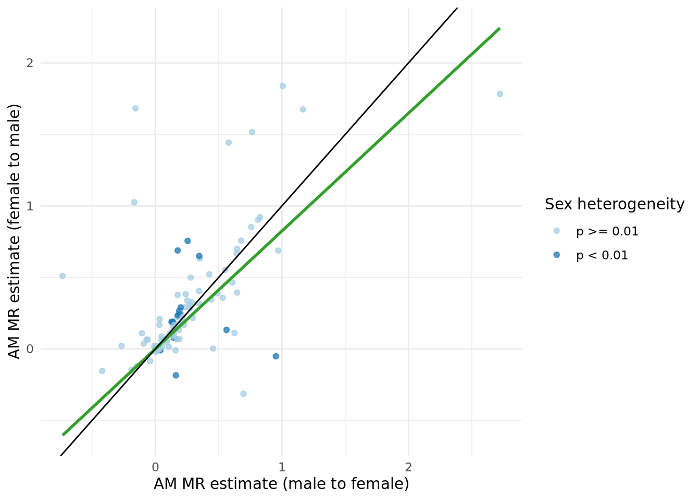
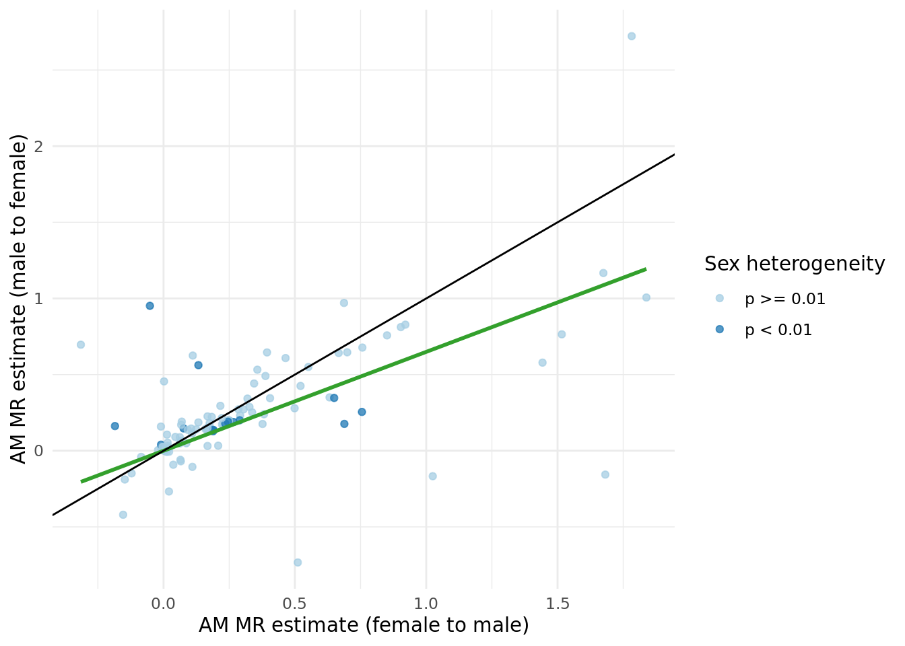

Last updated: 2021-11-29
Checks: 7 0
Knit directory: proxyMR/
This reproducible R Markdown analysis was created with workflowr (version 1.6.2). The Checks tab describes the reproducibility checks that were applied when the results were created. The Past versions tab lists the development history.
Great! Since the R Markdown file has been committed to the Git repository, you know the exact version of the code that produced these results.
Great job! The global environment was empty. Objects defined in the global environment can affect the analysis in your R Markdown file in unknown ways. For reproduciblity it's best to always run the code in an empty environment.
The command set.seed(20210602) was run prior to running the code in the R Markdown file. Setting a seed ensures that any results that rely on randomness, e.g. subsampling or permutations, are reproducible.
Great job! Recording the operating system, R version, and package versions is critical for reproducibility.
Nice! There were no cached chunks for this analysis, so you can be confident that you successfully produced the results during this run.
Great job! Using relative paths to the files within your workflowr project makes it easier to run your code on other machines.
Great! You are using Git for version control. Tracking code development and connecting the code version to the results is critical for reproducibility.
The results in this page were generated with repository version a836698. See the Past versions tab to see a history of the changes made to the R Markdown and HTML files.
Note that you need to be careful to ensure that all relevant files for the analysis have been committed to Git prior to generating the results (you can use wflow_publish or wflow_git_commit). workflowr only checks the R Markdown file, but you know if there are other scripts or data files that it depends on. Below is the status of the Git repository when the results were generated:
Ignored files:
Ignored: .Rhistory
Ignored: .Rproj.user/
Ignored: _targets/
Ignored: analysis/_site.yml_cp
Ignored: analysis/bgenie_GWAS/
Ignored: analysis/data_setup/
Ignored: analysis/download_Neale_list.csv
Ignored: analysis/process_Neale.out
Ignored: analysis/traitMR/
Ignored: data/Neale_SGG_directory_12_07_2021.csv
Ignored: data/Neale_SGG_directory_15_07_2021.csv
Ignored: data/PHESANT_file_directory_05_10_2021.txt
Ignored: data/UKBB_pheno_directory_05_10_2021.csv
Ignored: data/processed/
Ignored: data/raw/
Ignored: output/figures/
Ignored: output/tables/traitMR/
Ignored: proxyMR_comparison.RData
Ignored: proxyMR_figure_data.RData
Ignored: proxymr_100_clustermq.out
Ignored: proxymr_101_clustermq.out
Ignored: proxymr_102_clustermq.out
Ignored: proxymr_103_clustermq.out
Ignored: proxymr_104_clustermq.out
Ignored: proxymr_105_clustermq.out
Ignored: proxymr_106_clustermq.out
Ignored: proxymr_107_clustermq.out
Ignored: proxymr_108_clustermq.out
Ignored: proxymr_109_clustermq.out
Ignored: proxymr_10_clustermq.out
Ignored: proxymr_110_clustermq.out
Ignored: proxymr_111_clustermq.out
Ignored: proxymr_112_clustermq.out
Ignored: proxymr_113_clustermq.out
Ignored: proxymr_114_clustermq.out
Ignored: proxymr_115_clustermq.out
Ignored: proxymr_116_clustermq.out
Ignored: proxymr_117_clustermq.out
Ignored: proxymr_118_clustermq.out
Ignored: proxymr_119_clustermq.out
Ignored: proxymr_11_clustermq.out
Ignored: proxymr_120_clustermq.out
Ignored: proxymr_121_clustermq.out
Ignored: proxymr_122_clustermq.out
Ignored: proxymr_123_clustermq.out
Ignored: proxymr_124_clustermq.out
Ignored: proxymr_125_clustermq.out
Ignored: proxymr_126_clustermq.out
Ignored: proxymr_127_clustermq.out
Ignored: proxymr_128_clustermq.out
Ignored: proxymr_129_clustermq.out
Ignored: proxymr_12_clustermq.out
Ignored: proxymr_130_clustermq.out
Ignored: proxymr_131_clustermq.out
Ignored: proxymr_132_clustermq.out
Ignored: proxymr_133_clustermq.out
Ignored: proxymr_134_clustermq.out
Ignored: proxymr_135_clustermq.out
Ignored: proxymr_136_clustermq.out
Ignored: proxymr_137_clustermq.out
Ignored: proxymr_138_clustermq.out
Ignored: proxymr_139_clustermq.out
Ignored: proxymr_13_clustermq.out
Ignored: proxymr_140_clustermq.out
Ignored: proxymr_14_clustermq.out
Ignored: proxymr_15_clustermq.out
Ignored: proxymr_16_clustermq.out
Ignored: proxymr_17_clustermq.out
Ignored: proxymr_18_clustermq.out
Ignored: proxymr_19_clustermq.out
Ignored: proxymr_1_clustermq.out
Ignored: proxymr_20_clustermq.out
Ignored: proxymr_21_clustermq.out
Ignored: proxymr_22_clustermq.out
Ignored: proxymr_23_clustermq.out
Ignored: proxymr_24_clustermq.out
Ignored: proxymr_25_clustermq.out
Ignored: proxymr_26_clustermq.out
Ignored: proxymr_27_clustermq.out
Ignored: proxymr_28_clustermq.out
Ignored: proxymr_29_clustermq.out
Ignored: proxymr_2_clustermq.out
Ignored: proxymr_30_clustermq.out
Ignored: proxymr_31_clustermq.out
Ignored: proxymr_32_clustermq.out
Ignored: proxymr_33_clustermq.out
Ignored: proxymr_34_clustermq.out
Ignored: proxymr_35_clustermq.out
Ignored: proxymr_36_clustermq.out
Ignored: proxymr_37_clustermq.out
Ignored: proxymr_38_clustermq.out
Ignored: proxymr_39_clustermq.out
Ignored: proxymr_3_clustermq.out
Ignored: proxymr_40_clustermq.out
Ignored: proxymr_41_clustermq.out
Ignored: proxymr_42_clustermq.out
Ignored: proxymr_43_clustermq.out
Ignored: proxymr_44_clustermq.out
Ignored: proxymr_45_clustermq.out
Ignored: proxymr_46_clustermq.out
Ignored: proxymr_47_clustermq.out
Ignored: proxymr_48_clustermq.out
Ignored: proxymr_49_clustermq.out
Ignored: proxymr_4_clustermq.out
Ignored: proxymr_50_clustermq.out
Ignored: proxymr_51_clustermq.out
Ignored: proxymr_52_clustermq.out
Ignored: proxymr_53_clustermq.out
Ignored: proxymr_54_clustermq.out
Ignored: proxymr_55_clustermq.out
Ignored: proxymr_56_clustermq.out
Ignored: proxymr_57_clustermq.out
Ignored: proxymr_58_clustermq.out
Ignored: proxymr_59_clustermq.out
Ignored: proxymr_5_clustermq.out
Ignored: proxymr_60_clustermq.out
Ignored: proxymr_61_clustermq.out
Ignored: proxymr_62_clustermq.out
Ignored: proxymr_63_clustermq.out
Ignored: proxymr_64_clustermq.out
Ignored: proxymr_65_clustermq.out
Ignored: proxymr_66_clustermq.out
Ignored: proxymr_67_clustermq.out
Ignored: proxymr_68_clustermq.out
Ignored: proxymr_69_clustermq.out
Ignored: proxymr_6_clustermq.out
Ignored: proxymr_70_clustermq.out
Ignored: proxymr_71_clustermq.out
Ignored: proxymr_72_clustermq.out
Ignored: proxymr_73_clustermq.out
Ignored: proxymr_74_clustermq.out
Ignored: proxymr_75_clustermq.out
Ignored: proxymr_76_clustermq.out
Ignored: proxymr_77_clustermq.out
Ignored: proxymr_78_clustermq.out
Ignored: proxymr_79_clustermq.out
Ignored: proxymr_7_clustermq.out
Ignored: proxymr_80_clustermq.out
Ignored: proxymr_81_clustermq.out
Ignored: proxymr_82_clustermq.out
Ignored: proxymr_83_clustermq.out
Ignored: proxymr_84_clustermq.out
Ignored: proxymr_85_clustermq.out
Ignored: proxymr_86_clustermq.out
Ignored: proxymr_87_clustermq.out
Ignored: proxymr_88_clustermq.out
Ignored: proxymr_89_clustermq.out
Ignored: proxymr_8_clustermq.out
Ignored: proxymr_90_clustermq.out
Ignored: proxymr_91_clustermq.out
Ignored: proxymr_92_clustermq.out
Ignored: proxymr_93_clustermq.out
Ignored: proxymr_94_clustermq.out
Ignored: proxymr_95_clustermq.out
Ignored: proxymr_96_clustermq.out
Ignored: proxymr_97_clustermq.out
Ignored: proxymr_98_clustermq.out
Ignored: proxymr_99_clustermq.out
Ignored: proxymr_9_clustermq.out
Ignored: renv/library/
Ignored: renv/staging/
Untracked files:
Untracked: Rplots.pdf
Unstaged changes:
Modified: analysis/AM_MR_summary.Rmd
Modified: output/tables/define_Neale_categories.csv
Modified: output/tables/define_Neale_categories_filled.csv
Modified: renv.lock
Note that any generated files, e.g. HTML, png, CSS, etc., are not included in this status report because it is ok for generated content to have uncommitted changes.
These are the previous versions of the repository in which changes were made to the R Markdown (analysis/update_meeting_29_11_2021.Rmd) and HTML (docs/update_meeting_29_11_2021.html) files. If you've configured a remote Git repository (see ?wflow_git_remote), click on the hyperlinks in the table below to view the files as they were in that past version.
| File | Version | Author | Date | Message |
|---|---|---|---|---|
| Rmd | a836698 | Jenny Sjaarda | 2021-11-29 | wflow_publish("analysis/update_meeting_29_11_2021.Rmd") |
| Rmd | 3abb0a0 | jennysjaarda | 2021-11-28 | add udpate meeting for 29/11/21 |
Sought to compare the raw correlation amongst couples vs. the standardized MR effects. There are many traits where the correlation > MR effects including some traits of interest such as standing height, place of birth, among many others. A plot comparing the two and a summary table of the effects is shown below.
A few key changes to the pipeline since last time we looked at these results:
IVW_meta_beta and IVW_meta_pval corresponds to the beta and p-value of the meta-analyzed MR across sexes, respectively (i.e. MR estimates were computed in each sex-seperately using sex-specific SNP-exposure and SNP-outcome results and then meta-analyzed).0.05/62), identified 60 significant assortative mating MR results (corresponding to the table below).0.05/28), 0 traits showed significant differences amongst sexes (this changed from before).p < 0.05.Figures compared the male to female MR results, and vice versa are shown below. Suggests evidence of regression dilution bias?

time_together_even_bins) estimated using time at household variable, and median age (age_even_bins).age or time together) versus the bin-specific MR estimate.Slopes were calculated by estimating the beta-coefficient of a linear regression between MR estimate within each bin (dependent variable) and median bin (independent variable, either age or time at same household). Linear models were run both unweighted and weighted for the by the inverse of the SE of the MR estimate.
The number of significant trends (\(\beta\) estimates from the model: \(\alpha_{bin} \sim median_{bin}\)) significant after multiple hypothesis testing (p < 0.05/28 = 0.0017857) in each group was:
Repeated the confounder analysis with the following 4 traits:
| outcome_description |
|---|
| Average total household income before tax |
| Age completed full time education |
| Townsend deprivation index at recruitment |
| Fluid intelligence score |
Below are the corresponding figures:
sessionInfo()R version 4.1.0 (2021-05-18)
Platform: x86_64-pc-linux-gnu (64-bit)
Running under: CentOS Linux 7 (Core)
Matrix products: default
BLAS: /data/sgg2/jenny/bin/R-4.1.0/lib64/R/lib/libRblas.so
LAPACK: /data/sgg2/jenny/bin/R-4.1.0/lib64/R/lib/libRlapack.so
locale:
[1] en_CA.UTF-8
attached base packages:
[1] stats graphics grDevices datasets utils methods base
other attached packages:
[1] plyr_1.8.6 plotly_4.9.4.1 cowplot_1.1.1 knitr_1.33
[5] DT_0.18.1 kableExtra_1.3.4 forcats_0.5.1 stringr_1.4.0
[9] dplyr_1.0.7 purrr_0.3.4 readr_1.4.0 tidyr_1.1.3
[13] tibble_3.1.2 ggplot2_3.3.4 tidyverse_1.3.1 targets_0.5.0.9001
[17] workflowr_1.6.2
loaded via a namespace (and not attached):
[1] nlme_3.1-152 fs_1.5.0 lubridate_1.7.10 webshot_0.5.2
[5] httr_1.4.2 rprojroot_2.0.2 tools_4.1.0 backports_1.2.1
[9] bslib_0.3.0 utf8_1.2.1 R6_2.5.0 DBI_1.1.1
[13] lazyeval_0.2.2 mgcv_1.8-35 colorspace_2.0-1 withr_2.4.2
[17] tidyselect_1.1.1 processx_3.5.2 compiler_4.1.0 git2r_0.28.0
[21] cli_2.5.0 rvest_1.0.0 xml2_1.3.2 labeling_0.4.2
[25] sass_0.4.0 scales_1.1.1 callr_3.7.0 systemfonts_1.0.2
[29] digest_0.6.27 rmarkdown_2.11.2 svglite_2.0.0 pkgconfig_2.0.3
[33] htmltools_0.5.2 highr_0.9 dbplyr_2.1.1 fastmap_1.1.0
[37] htmlwidgets_1.5.3 rlang_0.4.11 readxl_1.3.1 rstudioapi_0.13
[41] farver_2.1.0 jquerylib_0.1.4 generics_0.1.0 jsonlite_1.7.2
[45] crosstalk_1.1.1 magrittr_2.0.1 Matrix_1.3-3 Rcpp_1.0.6
[49] munsell_0.5.0 fansi_0.5.0 lifecycle_1.0.0 stringi_1.6.2
[53] whisker_0.4 yaml_2.2.1 grid_4.1.0 promises_1.2.0.1
[57] crayon_1.4.1 lattice_0.20-44 haven_2.4.1 splines_4.1.0
[61] hms_1.1.0 ps_1.6.0 pillar_1.6.1 igraph_1.2.6
[65] codetools_0.2-18 reprex_2.0.0 glue_1.4.2 evaluate_0.14
[69] data.table_1.14.0 renv_0.13.2-62 modelr_0.1.8 vctrs_0.3.8
[73] httpuv_1.6.1 cellranger_1.1.0 gtable_0.3.0 assertthat_0.2.1
[77] xfun_0.24 broom_0.7.7 later_1.2.0 viridisLite_0.4.0
[81] ellipsis_0.3.2